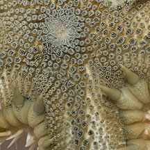
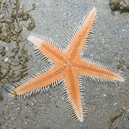
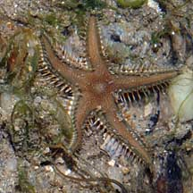
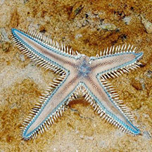
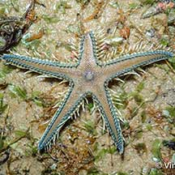
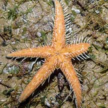
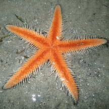
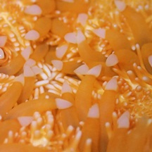
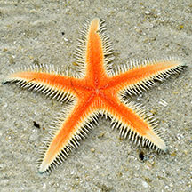

|
|
| sea stars text index | photo index |
| Phylum Echinodermata > Class Stelleroida > Subclass Asteroidea > Genera Astropecten |
| Orange
sand star Astropecten sp. Family Astropectinidae updated Mar 2020 Where seen? This large sea star with a startling orange underside is sometimes seen on sandy shores. Features: Diameter with arms 10-15cm. Body rather flat. Arms long, tapered to a sharp tip. Along the sides of the arms are large marginal plates and stout long sharp spines. These spines resemble the teeth of a comb and members of this family are sometimes called Comb sea stars. The upperside generally beige with blue edges. The underside of the body is bright orange. Tube feet also bright orange, large with white pointed tips. |
 Cyrene Reef, Aug 13 |
 |
 |
|
 Bright orange underside. |
 |
 Tiny orange star? Changi, Jul 08 |
*Species are difficult to positively identify without close examination.
On this website, they are grouped by external features for convenience of display.
| Orange sand stars on Singapore shores |
On wildsingapore
flickr
|
| Other sightings on Singapore shores |
 Tanah Merah, Mar 13 |
 St John's Island, Oct 20 |
 |
 |
 Bright orange tubefeet with white pointed tips. |
 |
| Filmed on Cyrene
Reef Aug 2013 shared by Heng Pei Yan on her blog. |